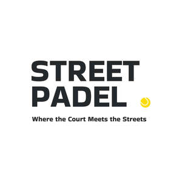

Trade Mark Journal No.2025/017 25 April 2025
UK00004185603 7 April 2025 (18,25,28,35,41)

- Class 18
- Luggage, bags, wallets and other carriers; Bags for sports clothing; Rucksacks; Shoulder bags; Drawstring bags; Roller suitcases; And parts and fittings for all the aforesaid goods included in this class.
- Class 25
- Headgear; Sweatbands; Sweat bands for the wrist; Head sweatbands; Caps [headwear]; Caps with visors; Clothing; Pants; Shorts; Tee-shirts; Tops [clothing]; Socks; Footwear; Training shoes; Padel shoes; And parts and fittings for all the aforesaid goods included in this class; .
- Class 28
- Sporting articles and equipment; Padel balls; Padel rackets; Padel racket cases; Bags and rucksacks for padel rackets; Padel ball cases; Grip bands for padel rackets; Grip wraps for padel rackets; Tapes for wrapping padel racket handles; Weights for mounting on padel rackets; Silicone grips for mounting on padel rackets; And parts and fittings for all the aforesaid goods included in this class.
- Class 35
- Commercial trading and consumer information, namely retail and wholesale services relating to sporting articles and sports equipment, padel balls, padel rackets, padel racket cases, bags and rucksacks for padel rackets, padel ball cases, grip bands for padel rackets, grip wraps for padel rackets, tapes for wrapping padel racket handles, weights for mounting on padel rackets, silicone grips for mounting on padel rackets; Commercial trading and consumer information, namely retail and wholesale services relating to headwear, weatbands, Sweat bands for the wrist, sweat bands for the head, Caps, Caps with visors, Clothing, Pants, Shorts, T-shirts, Tops [clothing], Socks, Training shoes, Padel shoes; Commercial trading and consumer information, namely retail and wholesale services relating to bags for sports clothing, Rucksacks, Shoulder bags, Gym bags, Roller suitcases; Advisory, consultancy and information services pertaining to the aforesaid.
- Class 41
- Providing virtual reality-based sports experiences and gaming services, specifically focused on padel, including immersive simulations, interactive gameplay, and online multiplayer competitions for entertainment and fitness purposes.
Street Padel Ltd